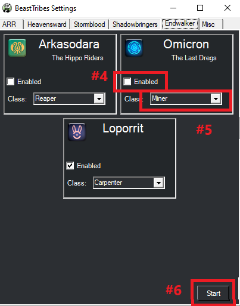

Beast Trbes¶

This plugin is designed to do the FFXIV Beast Tribe quets with as little interaction from the user as possible. Information on these tribes can be found here: FFXIV Console Games Wiki
Requirements¶
- RebornBuddy with active license (paid)
- Lisbeth with active license (paid)
- LlamaLibrary (free)
- LlamaUtilities (free)
- ExBuddy (free)
Purchasing¶
You can request a 72 hour trial of any of my plugins by joining our and typing
/trial on the #bot-spam channel.
You can purchase it using these buttons below. If you already own BeastTribes from previous expansions and just want the Dawntrail upgrade use BeastTribes DT. If you do not own BeastTribes, then a new purchase will include Dawntrail.
Purchase
Installation¶
- Download the latest version by following the link here.
- On the
.zipfile, right click >Properties>Unblock>Apply. - Unzip all contents into
RebornBuddy\Plugins\so it looks like this:
RebornBuddy
└── Plugins
└── BeastTribes
├── README.md
├── BeastTribesLoader.cs
├── Version.txt
└── BeastTribes.dll
Usage¶
For now only some of the tribes are available to be enabled. I am in the process of rewriting the other tribes and once they are completed I will activate them inside the plugin.
Example

- Go to the Plugins tab in RebornBuddy
- Select Beast Tribes from the menu
- Click Settings button
- Go to the
Misctab an enter your product key, hit verify. - Enable the tribes you'd like to do.
- Select he classes you want to do that tribe on.
- Press Start
Notes¶
- Keep in mind that you get 12 daily tribe allowances. All tribes except ARR use 3 allowances each. So you can do 4 tribes a day. ARR work differently.
- With ARR tribes each rank, Friendly, Trusted, Honored etc offer 3 quests each day. So for most ARR tribes you can use 9-12 daily allowances on a single tribe. For that reason I have added check boxes on the ARR tribes to let you select which ranks you want to do on those tribes.
- You must select the class you want for each tribe. Even if it defaults to the class you want, you need to click the drop down and select it manually at least once for it to save your setting.
- The Story Mode check box on the Key tab will cause the bot to stop when doing rank up quests, useful for those who wish to do them manually so they can see the story.
Known Issues¶
- You will get an error upon loading the Settings window if you don't have at least one DoW, DoL, and DoH gear set saved on your character.
- If you have multiple gear sets of the same job, or more gearsets then the game has by default, your drop down menu for class selection may look unusual. The Job change code will select the first job for that class it finds in your gearsets.
- Ixal Dailies - I recommend turning off any Plugins that have hooks that can move your character to another zone when running Ixal Dailies, especially Lisbeth related ones. A lot of the Ixal crafting sequences require you to have a buff to craft. This buff is given to you when you turn in the item right before the crafting step, but it's only a 5 minute buff. If another plugin like Market Board moves you to another zone to go sell, the buff might fall off before Lisbeth starts crafting.
Sylphs¶
- Some of these quests make you travel through lands that you will get aggro on and mess up the quest. I recommend doing it on a 50+ class.
- The quest
Perilous Pumpkinsmay put you in the wrong place. Looking into this.
Qitari¶
- Some of the fishing quests for this tribe require SpearFishing, which we currently can't do with RebornBuddy. Either do these quests manually, or do this tribe on Miner/Botanist.
- You may notice that the profile tosses any extra mats after turning in the quests rather than saving them for another day. We do this for two reasons. 1.) If you pick up a quest that can be turned in, you can't pick up another quest until you turn that one in, which causes the order to break and messes up the bot. 2.) It saves space. Take a small efficiency hit for afkness.
Completion¶
A Realm Reborn¶
Amalja'aa
Rank Ups
- Brotherhood of Ash
- Ranger Rescue
- An Eye on the Inside
- Martial Perfection
Neutral
- A Shell to Scry on
- Borderline Slaughter
- A Sappy Ending
- Luring Lacovie
- Fighting Firesand with Fire
- Smothering Instinct
- Losing One's Tampered
- Ravage the Ravagers
- Arms of the U
- Blitzing the Beacons
Recognized
- Rite Where It Hurts
- Thinning the Ranks
- Forged in Flame
- Beacon Keepers
- Singed Fur Their Own Good
- The Gland That Feeds You
- Douse Them While They're Down
- Before They Are Tempered
- Hard to Port
- This Infernal Heat
Friendly
- Elite Beating
- Unholier than Thou
- Raiding the Cache
- Pulling Fangs
- Demolition Drake
- Fire-spitting Image
- Nothing Sacred
- Fodder for the Flamefangs
- Hatchling Humiliation
- The Beacon That Burns You
Ixal
Rank Ups
- A Designed Job
- The Boy from Gridania
- Lathe to the Party
- Standing at the Helm
- Never Be Royal
- Spread Your Wings and Soar
Neutral
- Trust, but Verify
- Misdirected Woo
- Keepering up Appearances
- Blow, Ye Winds
Recognized
- Gyrodriven
- Of Rodents and Rigging
- What Evil Lurks in the Hearts of Golems
- One Ixal's Buzzard
- The Right Tools for the Tools
Friendly
- And Thanks for all the Fish
- An Empty Sack Cannot Hang Downright
- Hot Cross Buns
- Simple the Biast
- A Long Way to the Top
Trusted
- Reach for the Starboard
- Larboard and Lodging
- Right-wing Aeronautics
- Left-wing Aeronautics
- Getting into Gear
- Hells-vent on the Heavens
Respected
- Crazy Like the Pox
- A Hard Knock Life
- Manual Labor
- Leave Nothing to Waste
- Tanks for Nothing
- Never Steer You Wrong
Honored
- West for Fishing
- Your Gil's No Good Here
- Mining for Compliments
- A High Wind in Ishgard
- Bring You Own Ectoplasm
- In Case of Emergency
- We Fly High (Squwkin')
Kobolds
Rank Ups
- How Low Can You Go
- No-good Zo Ga's Ambition
- The Kobold and the Beautiful
- Revenge of the Furred
Neutral
- Rubbish for Refuse
- No Such Thing as a Free Lunch
- Finger Licking Good
- Battle of the Bottom-feeders
- Mothers of All Bombs
- Know Your Place
- Misery Loves Company
- Ill-gotten Gains
- Hells Have No Fury
- Bo Zu's Blown Cover
Recognized
- Ambushing the Assessors
- The Lode Warrior
- Armed and Dangerous
- Too Hot to Handle
- Operation Riffraff
- The Sly Salvages
- Belles of the Ball
- Contents Unknown
- Brain Buster
- A Dangerous Delivery
Friendly
- A Coblyn Catastrophe
- Friends in Low PLaces
- Glutton for Punishment
- Genius at Work
- Fulminating Furnaces
- A Meal Fit for a Fugleman
- Spread the Wealth
- Ba Go's Behest
- Wrath of the Roundsman
- Angry Angry Acolyte
Sahagin
Rank Ups
- Clutch and Kin
- The Scarlet Bloodletter
- Watching the Spawn
- Like Clutchfather, Like Son
Neutral
- A Killer Strategy
- Standard Procedure
- Enemy at the Tidegates
- A Taste for Paste
- Spawning Ground Salvation
- A Quick Snip
- Violence of the Clams
- Wind from Their Sails
- A Crate-ful Response
- Skullduggery
Recognized
- Move Along, Nothing to Heal Here
- Aint' Got Time to Breed
- Get a Lode of This
- Ballista Bust-up
- Better Ash than Blood
- Put a Shhhock in It
- Cluthfather Knows Best
- A Nap Before Drowning
- In the Shadow of the Moon
- Learn by Destroying
Friendly
- Tines of the Trident
- Shellfish Schemes
- An Enthralling Engagement
- Up in Shhhmoke
- Reaving in a Hurry
- The Tail's the Best Part
- Unfair Trading
- Sea Scraps
- Plunder Fire
- Removing the Stain
Sylphs
Rank Ups
- Voyce of Concern
- Pilfered Podlings *
- Idle Hands
- Feathers and Folly
Neutral
- Deck the Hut
- Malodorous Mischief
- Gourd Grief
- Feed Me
- Giddy for Goobbues
- Now You See Me
- Imperial Intruders
- The Magitek Menace
- Not Who They Seem
- Raising a Stink
Recognized
- With One Stone
- I Dream of Slimy
- Mushroom Madness
- Milkroot in Moderation
- Something to Sneeze At
- Shocking Developments
- Waterbringer
- In the Sylphlands, Treasure Hunts You
- Perilous Pumpkins
- Fungal Foulness
Friendly
- Ripe or the Picking
- A Sticky Situation
- Sympathy for the Sentinel
- No Root for You
- Mist Opportunities
- Clearing the Air
- Podlin Peril
- Boar Wars
- Moxia's Magnup Opus
- Bane of the Barbs
Heavensward¶
Moogle
Rank Ups
- The Milk of Moogle Kindness
- Trying Times
- A Crystalline Solution
- The Tools Make the Moogle
- A Monumental Task
- Piecing Together the Past
- The Zenith of Craftsmanship
Neutral
- Hasty Conclusions
- A Fundamentally Important Task
- Deep into the Weeds
- With a Little Help
- A Stone's Throw Away
Recognized
- Moogle on the Wall
- Kupo for Kupo Nuts
- Work That Mallow
- A Little Pick-me-up
- Stumbling Blocks
Friendly
- A Fine Finish
- The Mining Mishap
- Tricks Without Treats
- A Revivifying Roar
- For Moogles in Peril
Trust
- The Negotiator
- Back to the Drawing Board
- Built to Last
- Let There Be Light
- Tremble Finishing
Respected
- Journey of a Thousand Hews
- Ship of Dreams
- Stirring by Sternutation
- Rare Refreshments
- From Lax to Max
Honored
- Dragon Draff for Their Behalf
- A Fish for His Favors
- An Ishgardian Treat
- Mine and Craft
- The Moogle Motivator
Vanu Vanu
Rank Ups
- A Tribal Reunion
- Linu's Lovely Bones
- In the Skycage over the Sea
- Fishing for Friendship
- Sundrop the Beat
- Nest Side Story
- The Nest of Honor
Neutral
- Veni, Vundu, Vici
- Pussyfooting About
- Endymion Disco
- Water Crystal Waltz
- Hard-boiled Hustle
- Sanuwa Samba
Recognized
- Pilfering Pots from the Pantry
- Chigoe Cha-Cha
- Bird Watching
- Comb and Get It
- The Binding Soil
Friendly
- Flight of the Midges
- Fishing in Troubled Waters
- Reeling in the Vundu
- The House That Ginu Built
- A Bone to Pick
- A Hut to Dye For
Trusted
- Nailed Down
- Shady Premonitions
- Pestered Ancestors
- Smooth as Silk, Cool as Air
- Gaelicat's Out of the Bag
Respected
- Rotten to the Korrigan
- Gastornis Groove
- The Cat's Meow
- Easy as Paissa
Honored
- Dance Commander
- Electric Gunduloo
- Wildwort and Sundrop
- Vanish, Vile Vundu
Vath
Rank Ups
- Adventurers Don't Get Cold Feet
- An Acquired Taste
- Your Enemy and Mine
- Resistance Is Futile
- A Symbiotic Friendship
Friendly
- Getting the Shaft
- Breath of Fresh Air
- Bugging the Bugs
- Too Much to Bear
- The Foodstuff of Champions
Trusted
- A Long Shot
- Where the Silver Dew Grows
- The Caelumtree Wine Spree
- Ploughing Ahead
- At Full Pelt
Respected
- Failure to Deliver
- Shoo Fly, Don't Bother Me
- All About the Eggs
- Smells Like Trouble
- When Hunting Goes Wrong
Honored
- Flea Troubles
- Fifty Shades of Yellow
- A Romp Around the Foothills
- Neighborhood Squabbles
- Not for the Faint of Heart
Stormblood¶
Ananta
Rank Ups
- Griffins Rampant
- Chance of Gales
- It Can Be Cruel Sometimes
- Schism between Sister
- Celebratory Smorgasbord
Friendly
- A Real Fixer-upper
- A Sluggish Endeavor
- Deep-rooted Problems
- Beating the Heat
- Out for Delivery
- A Bit of Home Cooking
- Snack between Meals
- Have I Got News for You
Trusted
- A Signal for the Senses
- Criminal Crossings
- When Feathers Fly
- Sparring Lesson
- Funnel and Games
- A Swarm Welcome
- Keeping an Eye off Things
- Bhoot Camps
Respected
- The Very Hungry Marid
- The Antilion's Share
- Hearts of Previous Stone
- Ants in the Pants
- Up Sheet Creek
- Let There Be Lard
Honored
- Thin-skinned
- A Delicate Operation
- A Business Proposal
- For Fast, Temporary Relief
- Soothing the Sting
- Catching and Fletching
Kojin
Rank Ups
- Under Wraps
- The Value of Silence
- Misdelivered
- A Test of Courage
- True-blue
Friendly
- A Real Pearler
- Best Served Foul
- Krilled to Pieces
- Pickles of Partnership
- You Have the Rite
- Tonight We Dine in Shells
Trusted
- Anala-lyze This
- Buoyant Bounty
- Confused Courier
- Little Kojin Lost
- Much at Steak
- Sand-sifting Specialist
Respected
- Deep Turquoise Sea
- Flotsam and Jetsam
- Forever Blowing Bubbles
- Holy Mother of Pearl
- No, Not the Boo Box
- Pleasure Doing Business
Honored
- Clammed Up
- Tale of Rose
- You Blow It Up
- Tentacles of Trade
- The Hot-blooded Kojin
- Disciplinary Action
Namazu
Rank Ups
- One Size Fits All
- Big, Big Fish
- Waiting for Gyodo
- Out of the Frypan
- Into the Fire
- Disciples of Creation
Friendly
- The Importance of Being Yes, Yes
- Pilgrim's Regress
- Unidentified Festive Objects
- Carry That Crate
- Free for Most
- Simpler Gifts
Trusted
- Catching Catfish
- Wood You Believe It
- Ghosts of Honor
- Great Buuz Up
- Local Special Tea
- Surprise Offerings
Respected
- Carving a Niche
- Collision of Cultures
- Beat of the Drum
- Ready the Confetti
- Bearers Wanted
- Roasting a New Dish
- In Steep Trouble
Honored
- A Stable's Condition
- Cannot Say Neigh
- Bull's-eye
- A Favor Repaid
- A Welcome Surprise
- Overcommitment
Sworn
- Give Till It Hurts
- Taking the Plunge
- The Deadliest Sport
Shadowbringers¶
Dwarves
Rank Ups
- A Piss-up in a Brewery
- I Heard You LIke Tanks
- Tanking Is Hard
- Chief Concerns
- Tanks for the Memory
Friendly
- Lakeland Neighbors
- Clean Beard, Clear Mind
- Quality Parts, Guaranteed
- The New Batch
- The Telltale Axles
- A Blueprint a Day
- Foundations of Steel
Trusted
- How Do You Do, Fellow Dwarves
- Wood for What Ales You
- The Heart of Tankiness
- Boom and Dust
- One Hundred Tankards of Solitude
- Cooler Tanks Prevail
- What's in a Locket
Friendly
- Wayward 'Tons
- Taking the Heat
- Sealing the Deal
- Spreading the Word
- Targets Required
- Unbreakable Plate
- Close to Clearmeltdown
Honored
- Demolition Demo
- A Crude Awakening
- Fast and Loud
- Not for Drinking
- Remote Repairs
- Tip-top Gear
- Substitute Tester
Pixies
Rank Ups
- Sustenance for the Soul
- The Heart's Oasis
- A Cry from the Ashes
- As the Heart Bids
- Forever and a Dream
Friendly
- Where There's Wool, There's a Way
- A Flowery Frolick
- Sharing Is Caring
- The Aesthetician of Il Mheg
- Sweet as Honey
- I Dream of Shinies
- The Wonder of Witchweed
Trusted
- Of Marvelous Mallow
- The Moss Fungus Menance
- Porxine Perfection
- The Big Sleep
- Best of Boat Worlds
- Amazing Graze
- Pure Imagination
Friendly
- Raiders of the Lost Pork
- Pebble without a Cause
- There's Always a Stupider Fish
- Bring Your Water to the Slaughter
- Not the Beavers
- The Once and Future Marchioness
- No Accounting for Taste
Honored
- What the Phooka
- No Grown-ups Allowed
- Pride-and-Seek
- A Porxie Before Swine
- Snot My Problem
- Aim High
- The Chaser
Qitari
Rank Ups
- Wisdom of the Night
- Delving Deeper
- A Chilling Fate
- What Ails the Forest
- Glory Be to the Scree
Friendly
- A Tool's Errand
- Where the Sun Don't Shine
- A Touch of Home
- Mother's Recipe
- Power to the Vegetables
- Rational Thinking
- Making Scents
Trusted
- Marks of Friendship
- Prayers and Poison
- Salve Our Souls
- Rings of Pattern
- You Dirty Rats
- If It's Broke, Fix It
- La-hee
Friendly
- The Qitari Book of Records
- Meat and Greet *
- I Have Never Exploded
- By the Power Invested in Scree
- Rock 'n Ronka
- There's No Clean Like Qhoterl Clean
- Legends of the Ronkan Temple
Honored
- Her Splendid Materials
- Spelndid Eats
- Eggspotting
- Safety Is No Accident
- One Fish, Two Fish, Bread Fish, Stew Fish
- Serpent's Will be Done
- Qhoterl's Chronicles
Endwalker¶
Arkasodara
Rank Ups
- A Pachyderm's Promptitude
- Hippo Healing
- Defiant Ogul, Deified!
- Leader to Leader
- The Hippo Riders
Friendly
- Ridin' Flyers for Flyin' Riders
- Deal by the Docks
- Do It for the Vine
- Missing Rider
- Flowers for Sanduruva
- Anxious Rookie
- Gulal Generosity
Trusted
- Essential Eggredients
- Darling Defender
- Bloomin' Ocean
- Fresh Eats and Ripe Sweets
- Waste Not, Want None of That
- Seedy Affair
- Olfactory Warfare
Respected
- Ridin' Hazards
- Hippo Scrub
- Vanapati's Blessing
- Hells Hath No Fury as a Hippo Scorned
- Tusk Trouble
- Patching Up
- A Hippo's Best Friend
Honored
- An Explosive Brew
- Gathering Moss
- Blood from a Stonemason
- A Radiant Delivery
- Like a Crate to Water
- Manusyan for a Day
- Steep the Legs
Loporrit
Rank Ups
- The Incredible Machines
- Too Few Cooks
- Teamwork Makes the Dream Work
- A Million Malms Away
- Deams Come True
Friendly
- Don't Stop the Music
- A Pipe Dream
- Money Makes the Moon Go Round
- Dancing King
- Pieces of You
- Underneath the Starry Lights
- Carrotlight, Carrot Bright
Trusted
- Pitch Perfect
- Clean Times
- A Sound Endeavor
- Prototypical Retrieval
- Always Wear Protection
- Hare-raising Thrills
- Be Carrotful What You Wish For
Respected
- Hungry for Knowledge
- No Chill
- Fungi Frustrations
- For Every Mouth, a Carrot
- Whisks for Whiskers
- Sets, Reps, and the Loporrits
- Lunar Beats for Hopping
Honored
- Most Like It Sparkly
- Spatial Cleanse
- Clean Paws Make Good Artists
- By the Muse Forsaken
- Arts Is an Explosion!
- Craft, Craft, Fashion, Baby
- Sparking Artist
Omicrons
Rank Ups
- Longing So For All the Fish
- And Another Question...
- The Resturanteur's Guide to the Dragonstar
- Mostly Heartless
- Life, the Universe, and Coffee Beans
Friendly
- Signs of the Past
- Coffee Talk
- Well Below Standard
- A Brewing Reputation
- Grounds for Improvement
- A Fertile Blend
- The Hunger Pangs
Trusted
- The Robot and the Sea
- Using Their Hands
- Working Up a Thirst
- I'll FIsh It Myself
- Sold Out
- A Grebuloff Out of Water
- A Taste of the Sea
Respected
- It's Electric
- Ea Epicurious
- I, Omicron
- Guardians of the Galaxy
- Corporeal Hand to Proverbial Mouth
- Mush for Miw Misv
- Corporeal Comforts
Honored
- Remote Debugging
- A Light in the Dark
- Reclaiming the Taste of Home
- Not Forgotten
- Checking for Cavities
- Brainstorm
- The Lost World
Dawntrail¶
Pelupelu
Rank Ups
- A Tentative First Tour
- Earthenshire Awaits
- Recruitment Drive
- A Guest from Across the Salt
- Partners in Pel
Friendly
- A Notion of Promotion
- A Sackful of Memories
- Ferocious Foilage, Fearful Tourists
- Community Outreach in Kozanuakiy
- Preventative Measures
- Burden of Beasts
- Growing as a Guide
Trusted
- Bag Your Pardon
- Thrilled to Be Here
- Canvassing in Kozama'uka
- Reed between the Lines
- The Rudiments of Friend Removal
- The Nectar Collector
- Starting from Scrap
Respected
- Advisor vs. Predator
- Let Mobbie Be Your Guide
- The Popularity of Punutiys
- Breath of Foul Air
- Big Bellies to Fill
- The Hand That Feeds
- Born to Run Away
Honored
- Bird Meat's Back on the Menu
- A Sympathetic Ear
- Worth the Weight
- In Time for Lunch
- His Swarm Enemy
- Seasoned Adventuerer
- Animal Friendship
Mamool Ja
Rank Ups
- Doppro Tradition
- A Hoobigo's Return
- The Boon of Boonewa
- A New Yak T'el
- The Pride of Mamook
Friendly
- Root of the Problem
- Taking Your Leavings
- Cultivating Data
- Toil for the Soil
- Stem's the Breaks
- All Tools' Maintenance
- Healing the Fields
- Bonding with Branchbearers
Trusted
- Bugs Begone
- Pain Relief
- Stimulating Growth
- Fresh Cleaning Supplies
- Shine a Light on the Problem
- A Measure of Influence
Respected
- Promoting Produce
- Rough Around the Edges
- Building a Better Smoke Bomb
- Remedies at the Ready
- A Welcoming Fragrance
- Fruit of Friendship
- Vital Vegetables
Honored
- Creative Composting
- Stores to Dry For
- Keeping the Lights On
- Gifts of the Gainery
- A Seasoning for Soup
- Store-to-door Delivery
- Above-average Beverage